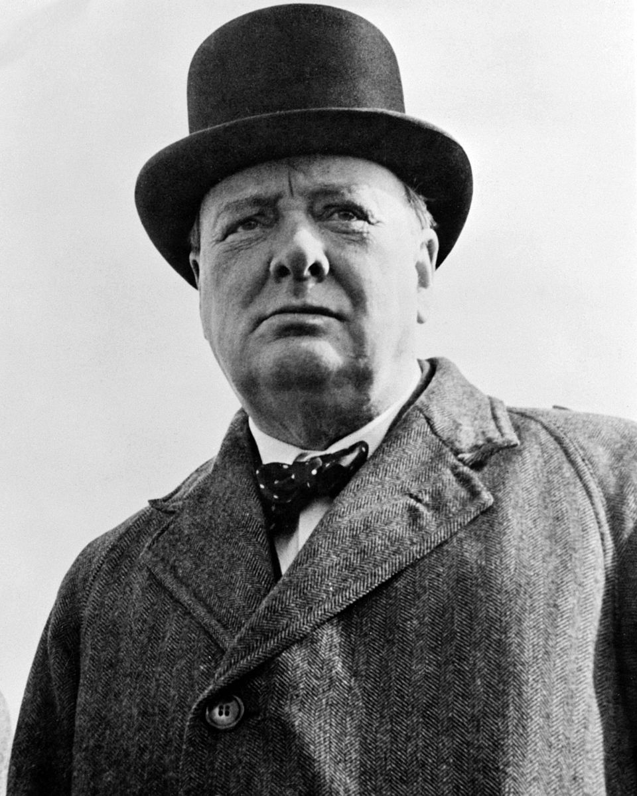

Albert Einstein var en tysk teoretisk fysiker som skabte relativitetsteorien.
I 1921 fik han tildelt nobelprisen i fysik.
I årstallet 1952 blev han tildelt muligheden for at være Israels 2. præsident hvilket han afslog af religiøse årsager.